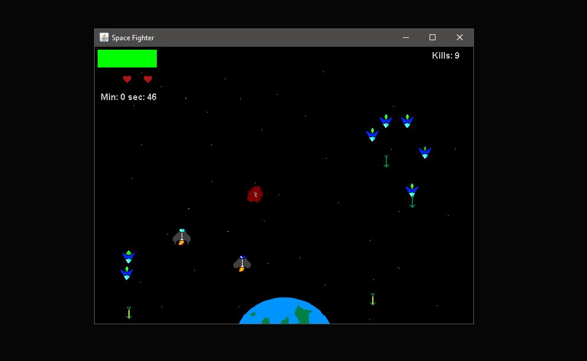

Space Fighter
A few things more...

Info
This is a simple 2D game that I build as a side project. I have used java without any libralies. The main idea behind the game is that the player has one minute to protect the Earth from the upcomming enemies as well as flying asteroids. The player also has a bot which can be called at any time as a second player. I used some math and utilized the Random class in order to make the bot look like it moves on it's own.